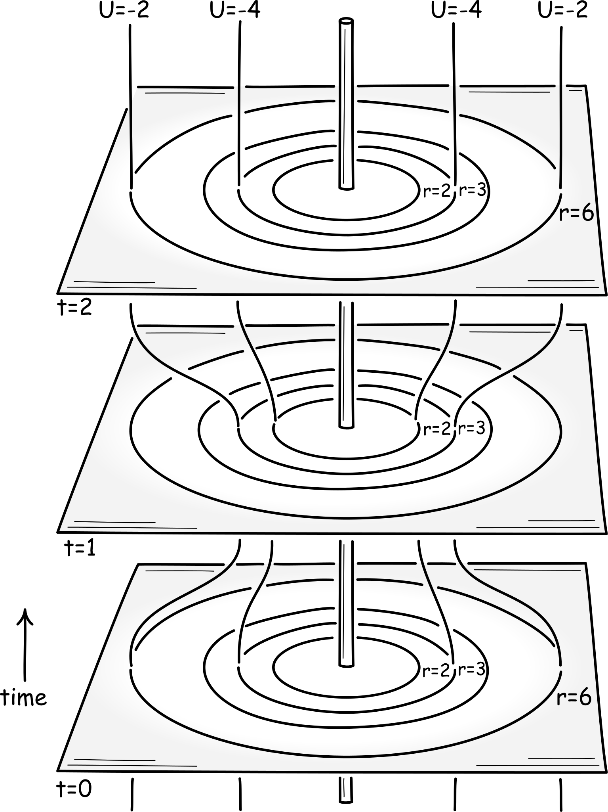

Supplement to The Hole Argument
The Hole Argument as a Template for Analyzing Gauge Freedoms
The hole argument has played a role in the growing recognition in philosophy of physics of the importance of gauge transformations: transformations acting on certain degrees of freedom in our physical theories which are supposed to have no correlates in physical reality. The analysis of the hole argument provides philosophers of physics with a convenient template when they are trying to decide whether or not something is a gauge redundancy. In this document, we discuss in more detail the relationship between the hole argument and gauge freedoms of physical theories.
1. What is a Gauge Freedom?
Let us first review what a gauge freedom is. A gauge freedom arises whenever we have mathematically distinct structures in a physical theory that represent the same physical situation. The simplest and best known example occurs in Newtonian gravitation theory. If we have a large mass \(M\) like the sun, it exerts an attractive force \(F\) on a unit test mass at distance \(r\) from the sun of magnitude
\[ F = GM/r^2 \]where \(G\) is the universal constant of gravitation. This force is an observable in the sense that a unit test mass at \(r\) will be accelerated towards the central mass by this force with acceleration \(F\).
These same facts about gravity can be expressed in terms of a potential field \(U\). The large mass \(M\) generates a potential field \(U\) at a point \(r\) distant from the mass according to
\[ U = -GM/r \]The potential field \(U\) becomes more negative as \(r\) gets smaller. For \(r= 6, 4, 3, \ldots,\) \(U = -2, -3, -4,\ldots\) where we pick the numerically easy case of \(GM=12\). Since masses move to regions of lower potential, they fall into this negative potential well.
A simple rule lets us determine the force pulling a unit mass into the potential well. That force is just the negative gradient of the potential field, where (loosely speaking) the gradient is the difference between potentials at the point in question and an infinitesimally neighboring point.
For example, compare the point at \(r=10\) and \(r=10.1.\) The two potentials are near enough \(U(10)=-0.1\) and \(U(10.1)=-0.099\) and their difference is 0.001. Now compare the point at \(r=5\) with that at \(r=5.1.\) The two potentials are near enough \(U(5)=-0.2\) and \(U\)(5.1)\(=-0\).196 and their difference is 0.004. So the ratio of the forces is \(0.004/0.001 = 4 = 2^2\). That is the ratio expected from the inverse square law, which tells us that the inverse squares of the distances are \((10/5)^2 = 2^2.\)
The important point in all this is that the potential field \(U = -GM/r\) is only one of very many potential fields compatible with the inverse square law for forces \(F = GM/r^2\). Since the forces \(F\) are recovered from the potential field \(U\) by comparing the values of \(U\) at neighboring points in space, we can add a constant amount—\(K\) say—to \(U\) everywhere and still get the same forces. When we compare the potential field \(U\) at neighboring points, the \(K\)s at each point cancel out.
What will become very important below is that this constant \(K\) must be the same everywhere in space only at one instant of time. Its value can change from moment to moment. So at time \(t=0\), we may have \(K=0\); or at \(t=1\) we may have \(K=27\); and so on. To indicate that \(K\) may vary with time \(t\) but not spatial position, it is written here as \(K(t)\).[7]
If we use the freedom to add the constant \(K(t)\) to \(U\) to transform to the new potential field \(U',\) we arrive at the simplest example of a gauge transformation
\[ U' = U + K(t) = -GM/r + K(t) \]Both fields, \(U\) and \(U'\) give the same observable forces. In so far as determining the gravitational forces on bodies is concerned, we can use either \(U\) or \(U'\). The choice doesn’t matter. That is taken to signify that the two potential fields \(U\) and \(U'\) represent the same reality. The transformation between them is a gauge freedom.
This is the simplest and best known example of a gauge freedom in physics. If we accept Leibniz equivalence, the hole transformation that relates the two metric fields of the hole argument is another example of a gauge transformation. Gauge transformations have long been of importance in particle physics, where they have provided a powerful means of constructing theories of interaction fields.
2. The Philosophical Problem of Gauge Freedoms
Intertransformable mathematical structures often arise in physical theories. The philosophical problem is to know when two intertransformable structures do in fact represent the same physical situation, so that the transformation is a gauge transformation.
Sometimes it is thought that the mere fact that two mathematical structures are intertransformable is all that is needed for the transformation to be a gauge transformation and for the differences between the two structures to correspond to nothing physical. Since the transformation is invertible, the essential fact is that any property of the first structure will have a correlated property in the second; and any property of the second will have a correlated property in the first. That means that the two structures are, informally speaking, perfect mathematical images of each other and each could stand in for the other in any formal application.
The notion that this transformation must be a gauge transformation fails, however. That the two structures are perfect mathematical mirror images of each other is not sufficient to ensure that they must represent the same physical structures. They certainly may represent the same physical structures, but they also may not. To see this, consider a mathematical, three dimensional Euclidean space used to represent a three dimensional physical space with Euclidean properties. The mathematical space hosts many flat, two dimensional surfaces, each of which can be transformed perfectly into any other. But to say that these transformations are merely gauge transformations is to collapse the three dimensions of the physical space into two dimensions. Each two dimensional surface in the physical space is a perfect copy of every other one; they are not all the same surface. The transformations between them cannot be gauge transformations.
One of the major outcomes of the discussions of the hole argument was this:
The decision as to whether a transformation is a gauge transformation cannot merely be decided by the mathematics; it is a physical issue that must be settled by physical considerations.
Unfortunately that complicates matters. A nice mathematical condition for when something is a gauge freedom would have been a straightforward solution to the problem. The sorts of physical considerations that speak for or against a gauge freedom are more elusive and less decisive. The template of the hole argument provides two indicators that some candidate transformation is a gauge transformation:
A transformation may be a gauge transformation and correspond to no real change in the physical reality represented if
- (observational verification fails) the changes in mathematical structures do not manifest in anything observable; and
- (determinism fails) the laws of the theory are unable to pick between the two structures related by the transformation, even when given expansive initial conditions on which the two agree.
The argument that justifies this criterion is the same as was used in the hole argument; it is just slightly generalized. The presumption is that it is possible to keep adding further mathematical embellishments to the mathematics of a physical theory until we are assuredly adding structures with no physical counterparts. The warning that we have reached this point of physical superfluity is that we can make changes to these mathematical structures that make no difference to what we observe and also outstrip the determining power of the laws of the theory. When those structures become invisible both to our powers of observation and to the theory’s laws, we are being warned that we have gone too far.
These ideas can be carried further. Earman (2003) has generalized this approach and suggests that the constrained Hamiltonian formalism gives principled reason for deciding whether a transformation is a gauge transformation. (For an entry into philosophical problems associated with gauge transformations, see the entry on symmetry and symmetry breaking, especially Section 2.5; and Brading and Castellani (2003).)
3. An Illustration of a Hole Type Argument in a Field Theory
A hole argument type failure of determinism can often be achieved in field theories, depending, of course, on the specific properties of the field theory. Here’s an example of one within Newtonian gravitation theory.
Let us consider the field surrounding a central mass for which \(GM=12\). We shall use the transformation
\[ U' = U + K(t) = -GM/r + K(t) \]to create a hole type argument that indicates this transformation is merely a gauge transformation.
We start with the field \(U\). It has values \(U(6)=-2,\) \(U(4)=-3,\) \(U(3)=-4,\) \(U(2)=-6.\) If we assume that the mass \(M\) is at rest in space, then the potential field \(U\) will be constant through time. This field is illustrated in Figure 7 below. It shows the space around the central mass at different times \(t=0,\) \(t=1\) and \(t=2\). The circles represent points in space with the same value of \(U\). For example, all those points at radius \(r=6\) have \(U=-2\). The constancy of the field in time is represented by the vertical lines that connect points with the same value of \(U\) across time. For example, point at \(r=6\) at each time instant have the same potential \(U=-2\).
![An up arrow with the label ‘time’ indicates that time advance in the up-vertical direction. Space at times t=0, t=1 and t=2 are represented as squares that are arrayed upwards, one on top of each other. In each are four concentric circles. The second and fourth from the center are labeled r=3 and r=6 respectively. The squares are seen side on, so that they are quadrilaterals with converging sides and the circle are ellipses. The center of each square is threaded by a thin cylindrical tube. Four vertical lines connect the extreme left and right edges of the r=3 and r=6 circles.](Gauge_1.svg)
Figure 7. Gravitational potential field before the transformation.
Let us select the following \(K(t)\). It is 0 for all time \(t\) except in \(0 \lt t \lt 2\). In that time interval, \(K(t)\) grows to a maximum value of \(K(t)=2\) at \(t=1\). Computing the field \(U' = U+K(t)\) for \(t=1\), where \(K=2\), we find values for \(U'\) as follows: \(U(6)=0,\) \(U(4)=-1,\) \(U(3)=-2\), \(U(2)=-4.\) Figure 8 illustrates this new field. The result of the transformation has been to shift regions of a particular value of \(U'\) inwards. For example, at \(t=0\) and \(t=2,\) \(U'=-2\) at radial distance \(r=6\). However at \(t=1,\) \(U'\) has a different value at \(r=6\); the points with \(U'=-2\) have been shifted inward to radial distance \(r=3\). As before, the vertical lines connect points with the same potential \(U'\). They bend inward to reflect the shift in \(U'\) in the time \(0 \lt t \lt 2\).

Figure 8. Gravitational potential field after the transformation.
What are we to make of these differences between the two fields \(U\) and \(U'\)? Do they betoken any physical difference in gravitational realities? The template of the hole argument suggests that they do not. For the differences in U and U’ are not expressed in any differences in the observationally verifiable motions of bodies falling in the vicinity of the mass M; the forces in both fields are the same. Moreover the laws of Newtonian gravitation theory do not seem to be able to discern which of the two fields ought to be realized in space. We can fix the field at \(U=U'\) for all space and all times \(t \lt 0.5\) and \(t \gt 1.5.\) Nonetheless, Newtonian gravitation theory is unable to say which of \(U\) and \(U'\) is the appropriate extension of the potential field into the times \(0.5 \lt t \lt 1.5.\) Whatever differences there are between \(U\) and \(U'\) in this region outstrip Newtonian gravitation theory.
In this example, the region in which determinism fails fills all space over some short period of time. What was distinctive and disturbing about the indeterminism of the original hole argument was that the indeterminism was localized to a region of arbitrarily small extent in both space and time. Such failures of determinism can arise in other field theories. After the gauge freedom of Newtonian gravitation theory, the next best known gauge freedom is in classical electrodynamics. In that theory, it is possible to set up a hole argument in which the indeterminism manifests in a region of arbitrarily small extent in both space and time.[8]
Rynasiewicz (2012) has related this gauge freedom to the freedom asserted by the thesis of the conventionality of simultaneity in special relativity. He argues that the relation of distant simultaneity among events is conventional to the same extent as the intertransformable models of the hole argument are physically equivalent.
For more applications of hole type arguments see Iftime (2006) (Other Internet Resources), Healey (1999), Lyre (1999) (Other Internet Resources), Rickles (2005), and Pooley (2006a).